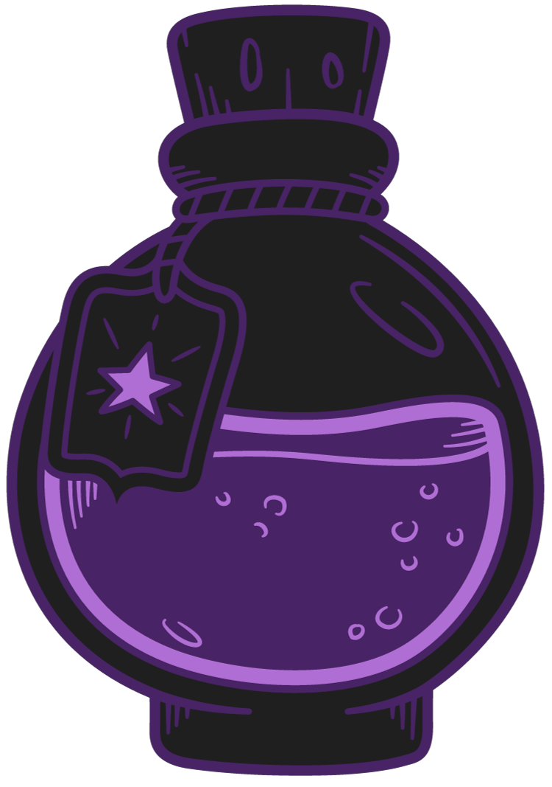
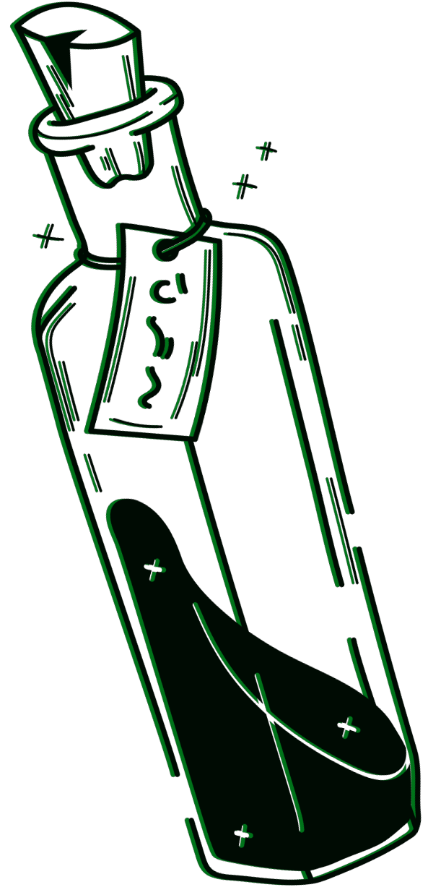
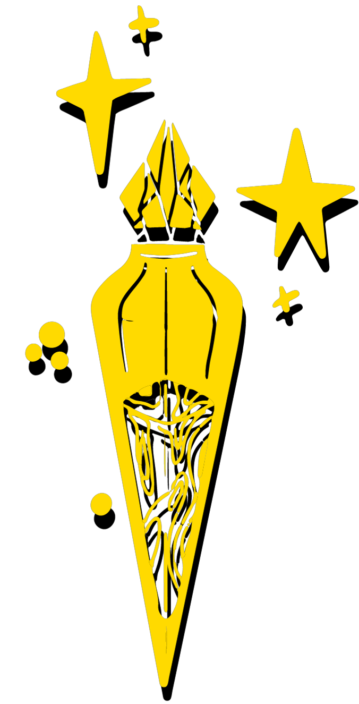

DRACO DORMIENS NUNQUAM TITILLANDUS


A amortentia, mais conhecida como poção do amor, tem um cheiro diferente para cada pessoa, sendo
sempre algo que ela goste muito

O Veritaserum ou Poção da Verdade é tão potente que três gotas fariam você confessar os seus
segredos mais íntimos. Mas foi criado um antidoto que neutraliza os efeitos da poção

A Poção do ódio revela os piores traços de uma pessoa em particular para quem a beber. Sendo
o oposto da amortentia, é recomendada para pessoas emocionalmente ligadas a uma pessoa que não retribua seus sentimentos

Com aparência de ouro derretido, Felix Felicis, conhecida como Sorte Líquida, é uma poção que traz
sorte a quem a beber por um determinado período de tempo